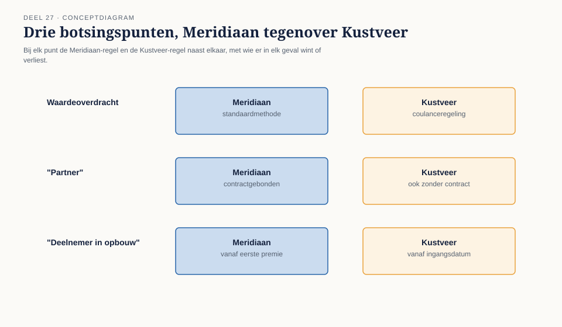
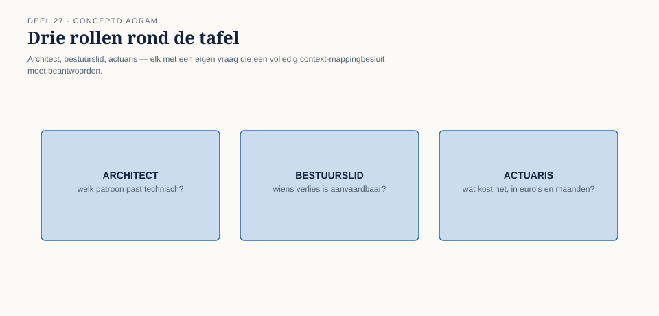
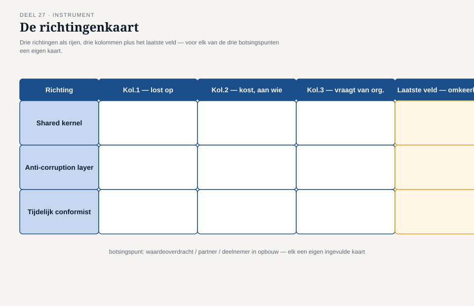

Deel 27 — DDD in fusie en organisatieverandering: twee modellen, één landschap
Slidedeck · Ductus-cursus Domain-Driven Design · niveau 3 (expert) · deel 27 van 30 · 28 slides
Slide 1 — Titel
Domain-Driven Design — deel 27 DDD in fusie en organisatieverandering: twee modellen, één landschap Niveau 3: expert
Slide 2 — Waar we staan
Deel 26: één begrip, één signaal. “Deelnemer in opbouw” — misschien gewoon een ander woord. Misschien niet.
Slide 3 — De kamer
Daan, Vera — architectuur. Youssef — Kustveer. Loes — bestuur, namens de achterban. Thijs — actuaris, met een prijskaartje.
Slide 4 — Drie botsingspunten
Waardeoverdracht. “Partner.” “Deelnemer in opbouw” — in volle omvang.
Slide 5 —

De drie botsingspunten naast elkaar, Meridiaan-regel tegenover Kustveer-regel
Slide 6 — Loes
“Als jullie definitie wint, verliezen zij een recht dat ze veertien jaar dachten te hebben.”
Slide 7 — Dit deel beslist niet
De drie richtingen op tafel. Geen knoop doorgehakt. Deel 28 en 30: dat komt.
Slide 8 — Wat dit deel oplevert
- De drie botsingspunten op waarde schatten
- Drie oplossingsrichtingen
- Wat elke richting kost, en aan wie
- De richtingenkaart
Slide 9 — Geen van beide fout
Meridiaan is niet “de standaard” omdat het de grotere organisatie is. Kustveer is niet “de uitzondering.”
Slide 10 —

Twee interne, consistente modellen — “welk model wint” ontleed tot “wiens realiteit telt hier het zwaarst”
Slide 11 — Karsten
“Dat is precies de vraag die we bij WGP 2.0 nooit stelden — wiens model gold, en wie droeg de rekening?”
Slide 12 — Richting A
Samenvoegen tot één gedeeld model (shared kernel)
Slide 13 — Richting A, de prijs
Eenvoudigste landschap op termijn. Vraagt een echt besluit: wiens regel het wordt — of een derde.
Slide 14 — Richting B
Aansluiten via een anti-corruption layer
Slide 15 — Richting B, de prijs
Beschermt het kernmodel het zuiverst. De vertaling moet zelf een besluit incorporeren.
Slide 16 — Richting C
Tijdelijk conformist, tot na de deadline
Slide 17 — Richting C, de prijs
Snelst werkend voor 1 januari 2028. Alleen verdedigbaar als “tijdelijk” geen loze belofte is.
Slide 18 —

Drie richtingen naast elkaar: wat ze beschermen, kosten, vragen
Slide 19 — Geen DDD-voorkeur
Geen van de drie is “de juiste manier.” DDD levert het instrument om elke richting eerlijk te wegen.
Slide 20 — Thijs
“Ik kan laten zien wie wint en verliest, in euro’s en maanden. Welke verliezer aanvaardbaar is — dat is geen actuariële vraag.”
Slide 21 —

Drie rollen, drie vragen: architect, bestuurslid, actuaris
Slide 22 — De richtingenkaart, kolom 1
Wat lost deze richting werkelijk op — en wat niet?
Slide 23 — De richtingenkaart, kolom 2
Wat kost deze richting, en aan wie?
Slide 24 — De richtingenkaart, kolom 3
Wat vraagt deze richting om vol te houden?
Slide 25 — Het laatste veld
Is dit verlies omkeerbaar — en door wie moet dit besluit gedragen worden?
Slide 26 —

De richtingenkaart: drie richtingen, drie kolommen, één laatste veld
Slide 27 — Youssef, aan het eind
“Ik hoorde vandaag een gesprek dat niet begon met ‘dit moet passen in jullie systeem.’ Dat betekent niet dat ik het eens ben.”
Slide 28 — Loes, en vooruit
“Wie zegt straks: dit is de prijs die we kiezen, en dit is waarom die eerlijk is?” Deel 28: wanneer je géén DDD forceert.